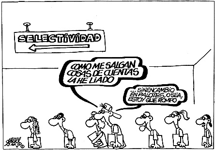

Elementos léxico-semánticos.
Recurrencia léxica:
Repetición de una determinada palabra o su familia léxica.
Recurrencia semántica:
Reiteración del mismo significado.
Sinonimia referencial o textual.
Relación de inclusón:Hponimia/ Hiperonimia/ Cohiponimia.
Campos semánitcos y asociativos:
- Asociación conceptual:coche, ruedas aparcar.../ bombillas, farolas, lámparas...
(campos semánticos y campos asociativos)
- Contraste: Antonimia: “desaparecer”- “recuperar”
Uso de proformas léxicas:
